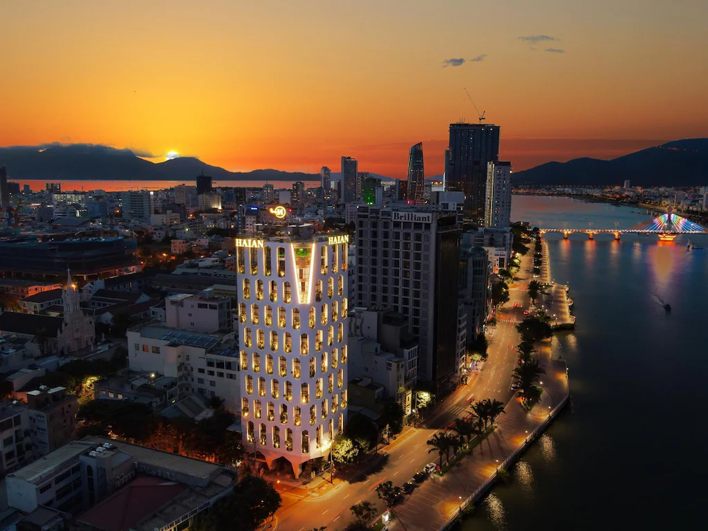

Most visitors watch Da Nang's Dragon Bridge fire show from the riverbanks or from the bridge itself. What they miss is the view from the water: the full span of Dragon Bridge lit against the night sky, fire reflected on the Han River's surface, and the unusual perspective of floating beneath the bridge as jets of water arc overhead.
Han River night cruises have become one of the most popular ways to experience the weekend show for exactly this reason. They also double as an introduction to Da Nang's illuminated riverfront, both banks lit with landmarks including the Tran Thi Ly Swing Bridge, the Han River Bridge, and the city skyline.
Cruises run across a wide price range, from basic open-deck sightseeing boats for around 100,000–150,000 VND per person to dinner cruises with buffet, drinks, and live entertainment at 400,000–700,000 VND. This guide covers every type, what each delivers, where to find them, and whether they're worth the cost for different types of travellers.
When to go: Night cruises timed to the Dragon Bridge fire show depart on Friday, Saturday, and Sunday evenings, generally between 8:00–8:30 PM to arrive in position for the 9:00 PM show. Off-schedule sunset and evening cruises run on other nights but do not coincide with the fire performance. Monday through Thursday cruises offer the illuminated bridge without the show.
Types of Night Cruises
Three main cruise categories operate on the Han River, catering to very different budgets and expectations. Understanding the differences before you book saves disappointment on the night.
Compare top Da Nang hotels for your dates →
Basic Sightseeing Cruise
The entry-level option. You board a river boat, typically a wooden or steel vessel with open-air deck seating, and spend 45–75 minutes cruising the river while the crew positions the boat to face Dragon Bridge for the 9 PM show. There is usually no food service, though some operators sell cold drinks onboard. The experience is simple: wind, water, city lights, and the fire show from the river.
This is the most common option and the easiest to find, operators line up at the Bach Dang waterfront on show nights and tickets are sold directly at the dock. It's a perfectly good experience for budget travellers, solo visitors, and those who just want a clear river vantage point without extras.
Dinner Cruise
A step up in price and formality. Dinner cruises use larger, purpose-built vessels with proper dining tables, covered areas, and a buffet or set menu of Vietnamese dishes and grilled seafood. Some operators include soft drinks; alcoholic beverages are usually charged separately. Live music, typically Vietnamese folk or easy-listening, accompanies dinner on some boats.
The Dragon Bridge fire show is the centrepiece, but a dinner cruise gives you a full evening rather than a 75-minute ride. Departure is typically around 7:30–8:00 PM, dinner is served while cruising, and the boat holds position for the 9 PM show before returning to dock by 10:00–10:30 PM.
Dinner cruises require advance booking on busy weekends. On regular show nights walk-ups may still be available, but capacity is smaller than basic boats and the better operators fill up quickly.
Private Charter
Small private boats can be chartered for groups, couples, or families who want full flexibility, departure time, route, food and drink arrangements, and onboard privacy. Private charters are the most expensive option by a significant margin. They work well for special occasions, proposals, or groups of 6+ for whom splitting the cost makes it more reasonable. Most require booking at least a day in advance through a tour agency or hotel concierge.
| Cruise Type | Duration | Price (per person) | Food Included | Best For | Fire Show View |
|---|---|---|---|---|---|
| Basic Sightseeing | 45–75 min | 100,000–200,000 VND ~$4–8 USD |
Usually no (drinks sometimes sold) |
Budget travellers, solo visitors, short stays | Good, open deck, unobstructed |
| Dinner Cruise | 2–2.5 hrs | 400,000–700,000 VND ~$16–28 USD |
Yes, buffet or set menu; drinks sometimes extra | Couples, families, first-time visitors wanting a full evening | Good, dedicated viewing stop at show time |
| Private Charter | Flexible (1.5–3 hrs typical) | From 1,500,000–3,000,000 VND total ~$60–120 USD / boat |
Customisable, confirm with operator | Couples, special occasions, groups splitting cost | Excellent, position to preference |
Price note: All prices above are approximate ranges based on typical market rates as of early 2026. Actual prices vary between operators and are subject to change. Always confirm the current fare with the operator before boarding. On-the-dock walk-up prices may differ from online or agency prices.
Where to Board, The Han River Docks
The main departure point for Han River night cruises is the Bach Dang riverfront promenade, located on the west bank of the Han River in central Da Nang's Hai Chau district. This is a public waterfront area with clearly marked docking areas, and on show nights (Friday, Saturday, and Sunday) it functions as an informal cruise market, with multiple operators competing for passengers.
How to Find the Docks
Search "Bach Dang Street Da Nang" or "Han River Dock Da Nang" in Google Maps or any mapping app. The docks sit along Bach Dang Street, between Dragon Bridge to the north and the Han River Bridge (Cầu Sông Hàn) to the south. The riverside promenade is clearly accessible on foot and well-lit at night. On show nights, you will see operators with boards advertising their cruise types and prices, the docks are impossible to miss.
Key Landmarks Near the Boarding Area
- Dragon Bridge is approximately 500 metres to the north along the river, visible from the dock area
- Han River Bridge (Cầu Sông Hàn) is immediately to the south, also visible from the docks
- The Bach Dang riverside park and benches are adjacent, useful if you arrive early to wait
Arrival Timing
For basic sightseeing cruises, arriving at the dock 20–30 minutes before your desired departure gives you time to compare operators, confirm prices, and board without rushing. For dinner cruises and private charters booked in advance, check your confirmation for departure time and be at the dock at least 15 minutes early. Operators will not hold the boat if you are late.
Practical tip: If you're arriving by Grab or taxi on a show night, traffic congestion near Dragon Bridge intensifies from around 8:00 PM. Ask your driver to drop you on Bach Dang Street south of the bridge, then walk north. This is typically faster than sitting in the grid near the bridge approach roads.
Where to Buy Tickets
There is no centralised ticketing system for Han River cruises, each operator sells their own tickets through multiple channels. Understanding the pros and cons of each helps you avoid overbooking, overpricing, and missed departures.
Walk up to operators at the Bach Dang waterfront, compare prices and boats in person, and buy a ticket immediately before boarding.
✓ Best for price comparison · See the boat before buying · No advance commitment
✗ No guarantee of availability on peak nights · Quality varies significantly between operators · Pressure-selling common
Most mid-range and luxury hotels in Da Nang can arrange a Han River cruise through a preferred operator. Typically arranged same-day or one day in advance.
✓ Trusted operators · Often pickup/dropoff arranged · Easier if you don't speak Vietnamese
✗ Slightly higher price due to commission · Less flexibility to choose operator yourself
Numerous licensed tour agencies in Da Nang sell Han River cruise tickets, often bundled with other activities or as part of evening packages.
✓ Can combine with other tours · Advance booking secures spots · Usually clear cancellation terms
✗ Commission adds cost · Quality depends on agency's operator relationship
Booking platforms such as Klook and Viator list Ha River night cruise operators, primarily for dinner cruises and private charters.
✓ Reviews help evaluate quality · Secure payment · Cancellation policies visible upfront
✗ Basic sightseeing boats rarely listed · Prices not always cheapest · Fewer options than dock walk-up
Peak season warning: During Tết (Vietnamese Lunar New Year), National Day (2 September), and Liberation Day (30 April), popular dinner cruise operators can sell out days or weeks in advance. If your visit coincides with a major holiday, book ahead, do not assume walk-up availability will exist.
"A Han River cruise at night is one of the cheapest and most atmospheric things you can do in Da Nang. The Dragon Bridge glows. The Tran Thi Ly Bridge is lit. Dinner on a slow-moving boat while the city passes — it's the right way to end a day here."
What to Expect Onboard
Seating
Basic sightseeing boats typically have plastic or wooden bench seating on an open upper deck. Dinner cruises have proper dining tables with chairs, usually under a covered canopy with open sides. Most vessels have a lower enclosed deck for shelter from wind or rain. Private charters vary widely by vessel, confirm the setup before booking.
Crowd Level
Basic sightseeing boats are often filled to near-capacity on show nights, they're small vessels and operators try to maximise passenger numbers. If you're sensitive to crowding, a dinner cruise with assigned seating is a more controlled environment. On a private charter, you control the group entirely.
The Bridge View from the Water
What watching from the water gives you that street-level viewing doesn't:
- Full bridge silhouette, You see the entire 666-metre structure from the river, including the illuminated dragon body running its full length. From the bridge or the street, you're always too close to see this.
- Fire reflection on water, The flames reflected on the Han River's surface is one of the most photographed images in Da Nang. It's genuinely impressive and not achievable from land.
- No heat or water spray, The river creates enough distance that you won't feel the heat of the fire or get drenched by the water jets. This is either a plus or minus depending on what you're after.
- The bridge from below, Cruising beneath Dragon Bridge's belly while it is illuminated is a unique perspective unavailable from land.
Audio
Basic sightseeing boats typically have minimal or no commentary. Dinner cruises often include a loudspeaker announcement (in Vietnamese and basic English) when the boat positions for the show. Private charters have no formal commentary. There is no official "soundtrack" to the Dragon Bridge show itself, the fire and water effects are not synchronised to music.
Safety
Licensed operators are required to carry life jackets for all passengers. Handrails are present on the vessel perimeter. Children should be kept away from the deck edge at all times, particularly on open-deck sightseeing boats where guardrails are lower. The Han River within the city area has no significant currents or dangerous conditions under normal weather.
Weather and Cancellations
Light rain does not typically stop the cruise or the bridge show. Most boats have at least partial shelter. In heavy rain, strong wind, or storm warnings, the cruise operator may shorten the cruise, delay departure, or cancel outright. The Dragon Bridge fire show itself may also not proceed in severe weather. Check the operator's cancellation and refund terms before booking, these vary widely.
Is It Worth It?, By Traveller Type
A Han River night cruise is genuinely good value for some visitors and unnecessary expense for others. Here's an honest breakdown.
A dinner cruise on a Friday or Saturday night is one of the most atmospheric things to do in Da Nang. The combination of river, city lights, Vietnamese food, and the fire show is genuinely romantic. Book a river-facing dinner table and a good bottle of wine. Worth the premium over a basic boat.
Children love the fire show from the water. A dinner cruise with assigned seating is safer and more manageable than a crowded bridge walkway. The boat provides a contained environment. Basic sightseeing boats work too but offer less control over where young children are relative to the deck edge.
A basic sightseeing boat at 100,000–150,000 VND (~$4–6 USD) is reasonable if you want the river perspective without paying for dinner you don't need. Street-level viewing is free and equally good for the show itself, so only board a cruise if the water angle genuinely interests you.
Skip the crowded dinner cruise and charter a private boat. You control the timing, positioning, food, and group. The cost is reasonable when split between 4–6 people and the experience difference is significant. Ask your hotel concierge to arrange this, most 4- and 5-star properties have preferred operators.
The fire reflection on the water and the full-span bridge view are unavailable from land. A basic sightseeing boat gives you freedom of movement on the deck for different angles. Private charter is better if you want complete control over positioning. Bring a wide-angle lens and stabilised shooting mode, a moving boat introduces camera shake.
A basic sightseeing boat is social and easy. You'll likely end up next to other tourists in similar situations. Skip the dinner cruise, solo pricing makes it expensive relative to the experience, and the dinner table setup is awkward for one person. The bridge walkway remains the best solo experience for full immersion in the crowd atmosphere.

What to Bring
- Light jacket or layer: River breezes are noticeably cooler than street level, even in warm months. An evening on the water at 9 PM can feel significantly cooler than Da Nang's daytime temperature suggests.
- Camera or phone with stabilisation: A moving boat makes sharp photos harder. Enable optical image stabilisation, use burst mode for the fire sequence, and consider a short portable tripod for longer exposures.
- Cash for drinks and tips: Basic boats may have drink vendors onboard. Tipping the crew is customary on dinner cruises. Bring 100,000–200,000 VND in small notes.
- Booking confirmation: For pre-booked dinner cruises and private charters, have your booking confirmation printed or clearly visible on your phone before arriving at the dock.
- Motion sickness medication if needed: The Han River is calm, but some people are sensitive to low-level boat motion. If you have any history of motion sickness, take appropriate medication before boarding.
- Insect repellent: Riverside evenings in Da Nang can attract mosquitoes, particularly in warmer months. A light spray before boarding is worth it for a comfortable two-hour cruise.